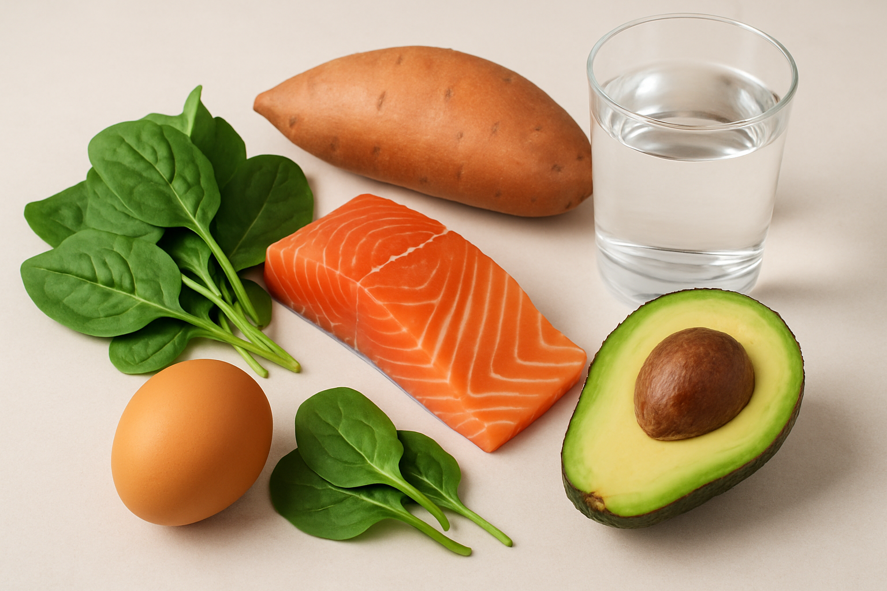
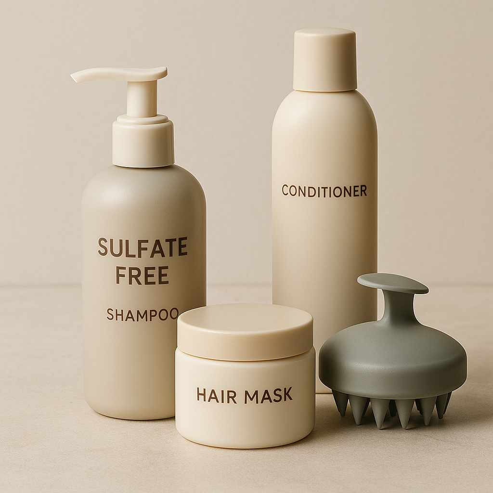
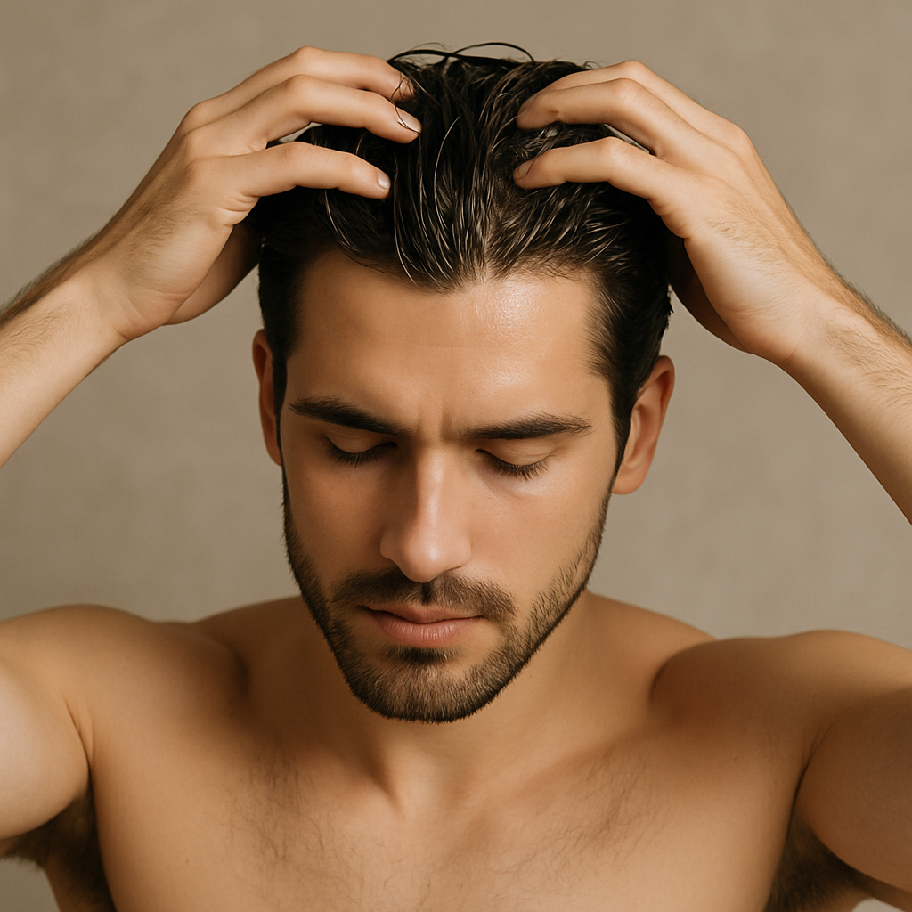

Hairmaxxing 102: Haircare

Introduction:
Understanding Hair Health: Hair growth and maintaining healthy hair aren’t just about genetics. It’s about taking the right steps to create the best environment for your hair to thrive. Whether you’re looking to grow your hair faster, strengthen it, or simply keep it healthy, there are key factors that you should focus on. In this guide, I’ll break down the basics of what affects hair growth, how you can boost it with simple changes to your routine, diet, and lifestyle and how to build a proper hair care for men.
The Science of Great Hair: What Actually Matters
Scalp Health = Hair Health It all starts with a healthy scalp. The health of your scalp directly impacts the quality and growth of your hair. If your scalp is clogged with excess oil, dirt, or product buildup, it can block hair follicles and slow down hair growth. On the other hand, a clean, moisturized scalp provides the perfect environment for hair to grow thick and strong.
Genetics & Hair Type:
Everyone’s hair is different. Some people are naturally blessed with thicker hair, while others may have finer hair. The truth is, genetics play a huge role in the type and growth rate of your hair. However, you can always improve the health of your hair by focusing on what’s within your control, like your scalp care, diet, and daily routine.
Diet & Hydration: Foods That Help Your Hair Grow Stronger

What you eat is just as important as how you care for your hair. A balanced diet can significantly impact the health and strength of your hair. Here are five foods that can massively affect your hair growth and health:
- Eggs: Packed with biotin and protein, eggs are essential for strong, healthy hair. Biotin promotes hair growth, while protein strengthens each strand.
- Spinach: Rich in iron, vitamin A, and vitamin C, spinach supports a healthy scalp and nourishes hair follicles, helping to keep your hair thick and shiny.
- Salmon: Loaded with omega-3 fatty acids and vitamin D, salmon promotes scalp health and nourishes hair from the root, making it thicker and shinier.
- Avocados: Full of vitamin E and healthy fats, avocados keep your hair moisturized and improve blood circulation to the scalp, which is essential for strong hair growth.
- Sweet Potatoes: Rich in beta-carotene, sweet potatoes promote hair health by encouraging cell growth and tissue repair, which is crucial for strong hair.
- Hydration: Along with a balanced diet, staying hydrated is key. Drinking plenty of water keeps your scalp and hair moisturized, supporting overall hair health. While not all of us can afford to eat these foods daily it is recommended to at least eat clean and avoid processed food. Your hair health depends mainly on your health, because at the end health is looks.
Building a simple hair care routine:
a. Hair care routines: While most of you follow a skin care routine, it is equally essential to follow a hair care routine too. The good part? It’s not as complex as a skin care routine, hair care routine are a lot simpler.
- Cleansing- A lot of people don’t know how to cleanse their hair and scalp, so I’m going to guide you through everything you need to know in washing your hair. First and foremost, it's crucial to identify your specific hair type in order to tailor your cleansing routine effectively.
- Shampoo: Use a gentle sulfate-free shampoo. The regular shampoos we commonly use are usually loaded with sulfates. While sulfates are effective at cleansing the hair, they can be too harsh on the scalp as they strip away its natural oils. If you have an oily scalp then use a sulfate free shampoo, go for a clarifying shampoo (regular sulfate shampoo) once a week or two weeks depending on the level of oiliness. On the other hand if you have a dry scalp then use a mild sulfate free shampoo and there is no need to use a clarifying shampoo unless there is a product buildup. If you have a normal scalp i.e. neither oily nor dry then you can use a sulfate free shampoo and go with a clarifying shampoo when your hair feels too oily or heavy.
- Frequency: If you have an oily scalp wash your hair twice or thrice a week. In case of a dry or normal scalp wash it once or twice a week. Make sure to not wash your hair more than 3 times a week.
- Conditioning: You need to condition your hair after every wash for better hair health, and you don’t need expensive conditioners for that. You can apply egg for strength and shine or aloe-vera blend for hydration and frizz control. You can also use other DIY hair masks based on your needs. I would suggest everyone to use egg mask at least once a week or two weeks as it makes your hair thicker and stronger but if you have a dry scalp, use only the yolk as the white can dry out your scalp more. Also keep in mind to not over use the egg mask as it can cause protein overload to your hair. Once a week is the sweet spot. Apply the mask and leave it for about 10-15 mins and later wash it off with room temperature water especially if you are using the egg mask as hot water can cook the egg in your hair making it difficult to wash it. You can also use a leave in conditioner for better results if you have extremely dry hair, argan oil leave in conditioner works great for dry hairs.
- Oiling: Oiling your hair can be beneficial if done correctly. Use a lightweight oil like coconut oil or almond oil. Heat the oil slightly until it is warm. Take a few drops, rub it on your palm and then gently run your hands through the hair. Repeat this process to oil you hair completely then later apply oil to your scalp and massage in circular motion for 5-10 mins. This improves blood flow to your scalp which is extremely beneficial in many ways. It helps prevent balding and promotes new hair growth, it makes your hair stronger and healthier. You can oil your hair once a week, apply and leave it for 2-3 hours before washing it. Oiling before shampooing can act as buffer and reduce stripping of natural oils.
- Nights: Invest on a silk or satin pillow case as this can be a game changer, cotton pillow case absorbs all the moisture from your hair leaving it dry and frizzy in the morning in addition cotton cases cause friction and breakage damaging the hair. A silk case also prevents acnes and breakouts by reducing friction. You can also consider overnight oiling once a month for deep hydration.
- Bonus: Make sure to use only warm or room temperature water as hot water strips the natural oil from your hair. Oil and shampoo your hair only once a week, on the rest days follow a no shampoo day where you wash your hair only with water. This promotes your hair’s natural texture making it wavier.


Common mistakes to avoid:

- Over washing: Washing your hair for more than 3 times a week. This strips the hair off its natural oil killing the texture and making it dry and lifeless.
- Using hot water: Using hot water rips off the natural oil and leaves the cuticle open which leads to loss of hydration making your hair dry. High temperatures also damage your hair permanently.
- Oiling: while oiling is beneficial in many ways, people often oil their hairs and leave it for multiple days. This does nothing but attract dust and cause unnecessary build up. Leaving the oil for 2 hours would be more than enough to get the complete benefits.
- Combing wet hair: Most people comb immediately after a shower. This damages your hair more than anything because after washing, the hair is usually soft and fragile, combing your hair at this stage can cause the hair to break easily.
- Aggressive drying: Most people dry their hair aggressively either by rubbing harshly or excessive heat. Gently scrunch your hair with a towel or use a cotton t-shirt if you have longer hairs, but be gentle. Using blow drier the wrong way can damage your hair permanently therefore do not use it until you learn to use it perfectly.
- Product overload: You do not need tons of product to style your hair. Using product only causes build up and sometimes even damage. It’s best to choose more natural hairstyles that require minimum to no product usage. Natural hairstyles might be less striking when compared to the fast moving trends but they are way more attractive and easy to style. Focus on improving your hair texture and the best way to do it naturally is protecting and letting the natural oils secreted by our scalps to nourish our hair. This texturizes your hair more than any sea salt spray. Always remember the natural way is the most effective way when it comes to looksmaxxing. After all looks is nothing but a sign of health and a healthy lifestyle.
Conclusion
With that said I hope this article helped you in understanding how hair health work and also gave you an idea about how to build your hair care routine. Be patient and consistent, there are no overnight fixes. With the right routine and habits you’ll find real results. You don’t need expensive products or complicated science, all you need is basic understanding, consistency and discipline.
Wishing all my readers the very best in their journey of looksmaxxing, you’ve chosen the right path. Be proud of yourself, be confident. Stay tuned for more updates.
PS: support me by following me on Instagram where I post more content on looksmaxxing. Thank you for your time and effort @_eleve_aesthetics_
For detailed guidance on selecting a haircut that enhances your facial structure and personal style
check out our article: Hairmaxxing 101: The Ultimate Guide to Hair Transformation